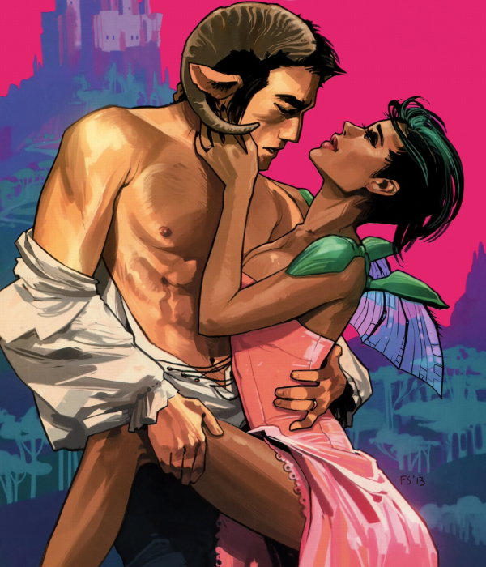

s far as science fiction is concerned, I am a purist and I don't like sci-fi works that mix genres, being it a film, video game, book, or graphic novel. This is the reason why I was initially eyeing Saga, which unashamedly mixes sci-fi with fantasy, with deep, deep suspicion. But the intriguing plot and wonderful graphics slowly sucked me in and gradually won me over, and now I count myself amongst the ardent followers of this truly unique comic book series.
Saga is certainly a graphic novel with an ambition. Adjectives such as ‘epic’ and ‘space opera’ which are being used in connection with the title are mostly justified and (slightly exaggerated) comparison in scale to the Star Wars universe is not merely accidental.
The series is clearly influenced by the Star Wars franchise, but is by no means an imitation or rip-off of the above - it is a completely authentic creation that is using novel ideas and features original, distinctive characters. The story revolves around two lovers, Alana and Marko from two opposing extraterrestrial races: winged Landfallians and horned Wreathers, fleeing authorities from both sides of a massive galactic war as they struggle to bring up and protect the fruit of their forbidden love, their daughter Hazel.
Alana comes from the technologically advanced race of people living on the planet Landfall, while Marko is from Wreath, Landfall’s only natural satellite, whose people wield magic. Since the destruction of either of the two worlds would destabilise the orbit of the second one, a precarious armistice is maintained on the two home worlds, while the war is ‘outsourced’ to different parts of the galaxy, where other races are forced to choose a side in the conflict and fight as a proxy of either Landfall or Wreath.
The pair meet when Marko is captured by Landfallians and becomes a prisoner of war and Alana is assigned to guard him in a jail on the planet Cleave. An unlikely love relationship develops between the two and, after rejecting all the racial and political prejudices, Marko and Alana escape together and against all the odds (after all, they come from two completely different species) the couple conceive a child.
After Alana gives birth to a healthy girl, who is of a mixed race (she inherits Alana’s wings and Marko’s horns) the narrative starts to pick up the pace. Soon, the love couple find themselves embroiled in a galaxy-wide pursuit, fleeing through the universe from planet to planet, wanted by both the Landfallians and the Wreathers. Each side wants them dead for the perceived betrayal of their particular warring faction, and, most importantly, to prevent the knowledge of their coupling from spreading, as the awareness of such ‘unholy’ union would cause an irreparable damage to the morale of their respective army. On Landfall, Prince Robot IV, a member of the royal family of the Robot Kingdom, is employed as the main pursuer of the two fugitives, while Wreath hires a mercenary named The Will, accompanied by a Lying Cat - a large genetically modified feline that can detect lies, to do the same job. The two pursuers, having essentially the same goal, but each standing on the other side of the conflict, frequently cross their paths with often unpredictable and dire consequences.
Brian K. Vaughan (Lost, Under the Dome), who conceived Saga in his childhood as the answer to the frustration over the ill-received prequels of Star Wars, and Fiona Staples who is responsible for the captivating artwork, certainly don’t shy away from adult themes. Copulating humanoid robots, inter-species orgies, genetically modified sex workers with a multitude of breasts, even the entire space station - Sextillion, dedicated to sexual entertainment, you will find it here all. Saga is certainly a graphic novel for a mature audience, and not only because of its often explicit content.
One of the unmistakable indicators that this graphic novel is really exceptional is the fact that only a few issues to its existence the comic series already won (amongst other accolades) the most prestigious science fiction award there is – 2013 Hugo Award for Best Graphic Story.

Saga will, without a shadow of a doubt, stay with us for a long time and this outstanding comic book series is highly recommended to all fans of space operas and romantic sagas (pun intended) alike.